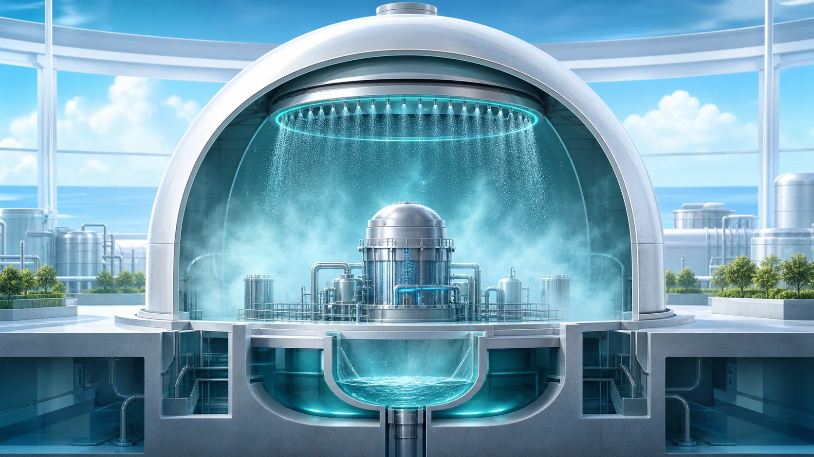
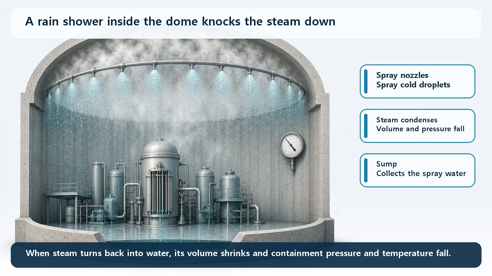
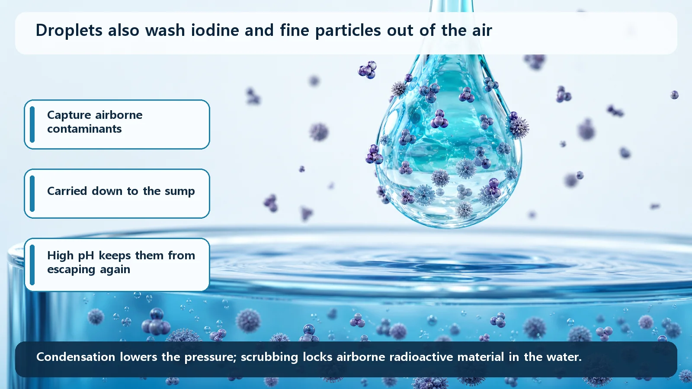

Reactor Types & Plant Systems · 194
What If It Rained From the Ceiling? — The Containment Spray System That Cools the Pressure and Washes the Air
A rain shower kept ready inside the dome: condensation lowers pressure and temperature, and droplets scrub iodine into alkaline sump water.

The containment spray system rains water down from the ceiling of the containment building when an accident fills it with hot steam. The cold droplets condense the steam, shrinking its volume so pressure and temperature fall, and they wash radioactive iodine and fine particles out of the air into the floor sump, where alkaline water keeps the iodine trapped.
What if the building fills with steam?
A summer thunderstorm does two jobs at once: it cools the muggy air and washes it clean. The containment spray system is built to do the same inside a nuclear plant.
The reactor and its piping sit inside the containment building, a large concrete-and-steel dome that is the outermost, final barrier keeping radioactive material inside. If a pipe carrying hot water fails, for example in a coolant leak, high-temperature, high-pressure water flashes into steam. The sealed dome fills with vapor and its pressure and temperature climb, like steam under a pressure-cooker lid. Left unchecked, that pressure would approach the limit the containment is designed to withstand.

Mission one: turn steam back into water
Splash cold water in a steamy bathroom and the fog vanishes: the droplets cool the vapor and it condenses. Countless cold droplets from the ceiling do the same to the steam in the dome.
Why does that lower the pressure? Steam occupies an enormous volume for the same amount of water. Condensed back into water, it shrinks dramatically, so there is less gas pushing on the dome. Very simply, it's a balance:
Steam and heat coming in ↔ steam and heat removed by the spray
When the left side is bigger, pressure rises; when the spray catches up or overtakes it, pressure stops rising and comes down. The spray system's job is to enlarge the right side so containment pressure stays below its design limit.
Mission two: wash the air
Rain washes dust and pollen out of the air. Spray droplets do the same with radioactive material that may escape from the fuel in an accident, especially radioactive iodine, which can drift as a gas or as very fine particles. The droplets catch it and carry it down into the pool on the floor, the sump.
Dissolved iodine can, under the right conditions, fly back off as a gas, so the spray and sump water are kept alkaline (high pH) to hold it in the water. Washing it out is only half the job; keeping it from escaping again completes it.

Where the water keeps coming from
At first the system sprays borated water from a large storage tank. As the tank runs low, it pumps up the water pooled in the sump, cools it in a heat exchanger and sprays it again. Fresh water first, then pooled water cooled and reused, so a limited supply can keep cooling and washing for a long time.
Not the water that cools the core
| Safety injection | Containment spray | Fire sprinklers | |
|---|---|---|---|
| Where the water goes | Into the core, inside the reactor piping | Into the containment air, outside the piping | Over a fire |
| What it does | Cools the fuel | Condenses steam, washes out radioactive material | Puts out fires |
Safety injection and containment spray both work in an accident, but they cover different places: one is water that cools the fuel, the other water that cools and cleans the building's air.
Key takeaways
The containment spray system protects the final barrier in two ways: condensation brings containment pressure and temperature down, and scrubbing locks airborne radioactive iodine and particles into alkaline sump water. It runs first on stored water, then on recirculated, cooled sump water, a good example of plants preparing layer upon layer for situations that may never happen.